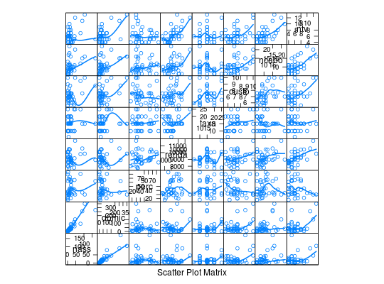

Dados de um estudo sobre demanda de TV's a cabo em 40
áreas metropolitanas dos Estados Unidos. Nesse estudo a variável
de interesse é o número de assinantes (nass) e as demais
variáveis registradas tem por objetivo explicar esta contagem.
Um data.frame com 40 observações e 8 variáveis.
nassdomicpercrendataxacustoncabontvPAULA (2004), Tabela 4.7, pág. 317.
data(PaulaTb4.7)#> Warning: data set ‘PaulaTb4.7’ not foundstr(PaulaTb4.7)#> 'data.frame': 40 obs. of 8 variables: #> $ nass : num 105 90 14 11.7 46 ... #> $ domic: num 350 255.6 31 34.8 153.4 ... #> $ perc : num 30 35.2 45.2 33.6 30 ... #> $ renda: int 9839 10606 10455 8958 11741 9378 10433 10167 9218 10519 ... #> $ taxa : num 14.9 15 15 10 25 ... #> $ custo: num 10 7.5 7 7 10 7.66 7.5 7 5.6 6.5 ... #> $ ncabo: int 16 15 11 22 20 18 12 17 10 6 ... #> $ ntv : int 13 11 9 10 12 8 8 7 8 6 ...library(lattice) splom(PaulaTb4.7, type = c("p", "smooth"), lwd = 2)#> Warning: pseudoinverse used at 5#> Warning: neighborhood radius 1#> Warning: reciprocal condition number 0#> Warning: pseudoinverse used at 5#> Warning: neighborhood radius 1#> Warning: reciprocal condition number 0#> Warning: pseudoinverse used at 5#> Warning: neighborhood radius 1#> Warning: reciprocal condition number 0#> Warning: pseudoinverse used at 5#> Warning: neighborhood radius 1#> Warning: reciprocal condition number 0#> Warning: pseudoinverse used at 5#> Warning: neighborhood radius 1#> Warning: reciprocal condition number 0#> Warning: pseudoinverse used at 5#> Warning: neighborhood radius 1#> Warning: reciprocal condition number 0#> Warning: pseudoinverse used at 5#> Warning: neighborhood radius 1#> Warning: reciprocal condition number 0#> Warning: pseudoinverse used at 5#> Warning: neighborhood radius 1#> Warning: reciprocal condition number 0#> Warning: pseudoinverse used at 5#> Warning: neighborhood radius 1#> Warning: reciprocal condition number 0#> Warning: pseudoinverse used at 5#> Warning: neighborhood radius 1#> Warning: reciprocal condition number 0#> Warning: pseudoinverse used at 5#> Warning: neighborhood radius 1#> Warning: reciprocal condition number 0#> Warning: pseudoinverse used at 5#> Warning: neighborhood radius 1#> Warning: reciprocal condition number 0#> Warning: pseudoinverse used at 5#> Warning: neighborhood radius 1#> Warning: reciprocal condition number 0#> Warning: pseudoinverse used at 5#> Warning: neighborhood radius 1#> Warning: reciprocal condition number 0#> Warning: pseudoinverse used at 5#> Warning: neighborhood radius 1#> Warning: reciprocal condition number 0#> Warning: pseudoinverse used at 5#> Warning: neighborhood radius 1#> Warning: reciprocal condition number 0#> Warning: pseudoinverse used at 5#> Warning: neighborhood radius 1#> Warning: reciprocal condition number 0#> Warning: pseudoinverse used at 5#> Warning: neighborhood radius 1#> Warning: reciprocal condition number 0#> Warning: pseudoinverse used at 5#> Warning: neighborhood radius 1#> Warning: reciprocal condition number 0#> Warning: pseudoinverse used at 5#> Warning: neighborhood radius 1#> Warning: reciprocal condition number 0#> Warning: pseudoinverse used at 5#> Warning: neighborhood radius 1#> Warning: reciprocal condition number 0#> Warning: pseudoinverse used at 5#> Warning: neighborhood radius 1#> Warning: reciprocal condition number 0#> Warning: pseudoinverse used at 5#> Warning: neighborhood radius 1#> Warning: reciprocal condition number 0#> Warning: pseudoinverse used at 5#> Warning: neighborhood radius 1#> Warning: reciprocal condition number 0#> Warning: pseudoinverse used at 5#> Warning: neighborhood radius 1#> Warning: reciprocal condition number 0#> Warning: pseudoinverse used at 5#> Warning: neighborhood radius 1#> Warning: reciprocal condition number 0#> Warning: pseudoinverse used at 5#> Warning: neighborhood radius 1#> Warning: reciprocal condition number 0#> Warning: pseudoinverse used at 5#> Warning: neighborhood radius 1#> Warning: reciprocal condition number 0#> Warning: pseudoinverse used at 5#> Warning: neighborhood radius 1#> Warning: reciprocal condition number 0#> Warning: pseudoinverse used at 5#> Warning: neighborhood radius 1#> Warning: reciprocal condition number 0#> Warning: pseudoinverse used at 5#> Warning: neighborhood radius 1#> Warning: reciprocal condition number 0#> Warning: pseudoinverse used at 5#> Warning: neighborhood radius 1#> Warning: reciprocal condition number 0#> Warning: pseudoinverse used at 5#> Warning: neighborhood radius 1#> Warning: reciprocal condition number 0#> Warning: pseudoinverse used at 5#> Warning: neighborhood radius 1#> Warning: reciprocal condition number 0#> Warning: pseudoinverse used at 5#> Warning: neighborhood radius 1#> Warning: reciprocal condition number 0